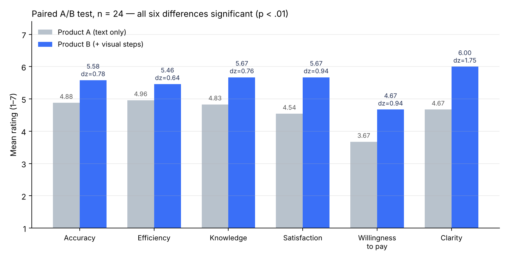

我们只改了一个变量：在关键讲解步骤加入可视化图解。24 人配对 A/B 测试，6 项体验指标全部显著提升。

| 指标（1–7 分） | A | B | 差值 | Cohen's dz |
|---|---|---|---|---|
| 准确性 | 4.88 | 5.58 | +0.71 | 0.78 |
| 效率 | 4.96 | 5.46 | +0.50 | 0.64 |
| 知识帮助 | 4.83 | 5.67 | +0.83 | 0.76 |
| 满意度 | 4.54 | 5.67 | +1.13 | 0.94 |
| 付费意愿 | 3.67 | 4.67 | +1.00 | 0.94 |
| 讲解清晰度 | 4.67 | 6.00 | +1.33 | 1.75 |
单尾配对 t 检验，全部 p < .01；Wilcoxon 符号秩检验结果一致。愿意继续使用 B 的 16 人，A 仅 1 人；开放评论正面占比由 38% 升至 96%。
本页是测试版本的轻量网页复刻，用于作品展示；对话为脚本演示。